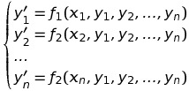

Определение. Системой дифференциальных уравнений называется совокупность уравнений, в каждое из которых входит независимая переменная, искомые функции и их производные.
Определение. Нормальной системой дифференциальных уравнений называется система дифференциальных уравнений вида:  (1)
Решением такой системы называется совокупность n функций yi(x), i=1..n, удовлетворяющих всем уравнениям системы.
Частным решением системы (1) называется решение, удовлетворяющее заданным начальным условиям yi(x0)=yi0i=1..n, где yi0 - заданные постоянные величины.
Рассмотрим задачу Коши для дифференциального уравнения n-го порядка: (2) (3) Если уравнение (2) разрешимо относительно старшей производной un, т.е. его можно представить в виде ,то его можно привести к нормальной системе n дифференциальных уравнений. Положим: Уравнение (2) тогда примет вид: Таким образом, наше уравнение свелось к нормальной системе СДУ: Начальные условия (3) принимают следующий вид:
 (2)
(2) (3)
(3) ,то его можно привести к нормальной системе n дифференциальных уравнений. Положим:
,то его можно привести к нормальной системе n дифференциальных уравнений. Положим: